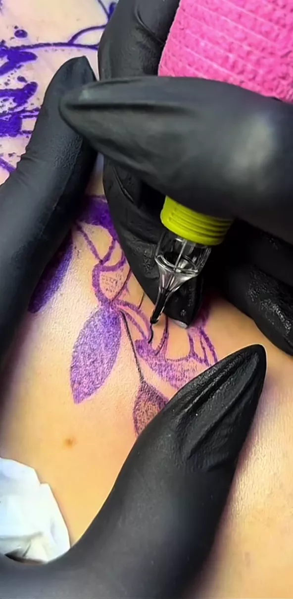

Fine line
Traço fino, contínuo e limpo. Para desenhos pequenos, discretos, que envelhecem bem na pele.
estúdio privado · [CONFIRMAR cidade/UF]

Tatuagens autorais, florais e fine line. Um estúdio privado, feito por uma mulher, para mulheres.
estúdio privado
Sou a Eloize. Tatuo desde [CONFIRMAR ano] e montei um estúdio privado, dedicado a mulheres, onde cada atendimento acontece com hora marcada e sem plateia. Meu traço é delicado: florais, fine line e artes autorais desenhadas a partir da sua história. Aqui você não escolhe um desenho de catálogo — a gente cria junto, antes de qualquer agulha encostar na pele.

Traço fino, contínuo e limpo. Para desenhos pequenos, discretos, que envelhecem bem na pele.

Botânicas desenhadas à mão: folhagens, flores de campo e composições que acompanham a curva do corpo.

Uma arte criada só para você, a partir de uma conversa, uma referência ou uma história que você quer carregar.
portfólio
Todas as fotos são de trabalhos autorais, tatuados por mim. “Cicatrizadas” mostra como as peças ficam depois da cura.
flash
Desenhos autorais prontos, tatuados uma única vez. Quando alguém reserva, a arte sai daqui e não se repete.
[CONFIRMAR: nome, tamanho aproximado e status real de cada uma das artes abaixo]

[CONFIRMAR] cm
Reservar no WhatsApp
[CONFIRMAR] cm
Reservar no WhatsApp
[CONFIRMAR] cm
Reservar no WhatsApp
[CONFIRMAR] cm
Reservar no WhatsApp
[CONFIRMAR] cm
Reservar no WhatsApp
[CONFIRMAR] cm
Reservar no WhatsApp
[CONFIRMAR] cm
Reservada
[CONFIRMAR] cm
ReservadaVocê me chama no WhatsApp e conta a ideia: referência, local do corpo e o tamanho que imagina.
Envio o valor, a duração estimada e as datas livres. A reserva é confirmada com sinal. [CONFIRMAR política de sinal]
Finalizo a arte e mostro no dia. Ajustamos juntas antes de começar — o decalque só vai para a pele quando você aprovar.
Atendimento privado, material 100% descartável. Você sai com as orientações de cuidado por escrito.
biossegurança
[CONFIRMAR protocolo da Eloize]
[CONFIRMAR]
Sol direto, mar, piscina, academia e coçar a região até a cura completa.
[CONFIRMAR prazo e política de retoque]
[CONFIRMAR: substituir pelos três depoimentos reais das clientes]
[CONFIRMAR depoimento 1]
[CONFIRMAR nome] · [CONFIRMAR local do corpo]
[CONFIRMAR depoimento 2]
[CONFIRMAR nome] · [CONFIRMAR local do corpo]
[CONFIRMAR depoimento 3]
[CONFIRMAR nome] · [CONFIRMAR local do corpo]
dúvidas
[CONFIRMAR — o estúdio é dedicado a mulheres; escrever a resposta na voz dela]
Depende do lugar e do tamanho. Regiões com osso mais perto da pele incomodam mais. A gente faz pausas sempre que você precisar.
Pelo WhatsApp. Me manda a referência, o local do corpo e o tamanho aproximado em centímetros.
[CONFIRMAR]
[CONFIRMAR]
Não. Só atendo maiores de 18 anos, com documento.
[CONFIRMAR]
Me conta a ideia. Quem responde sou eu, não um robô.